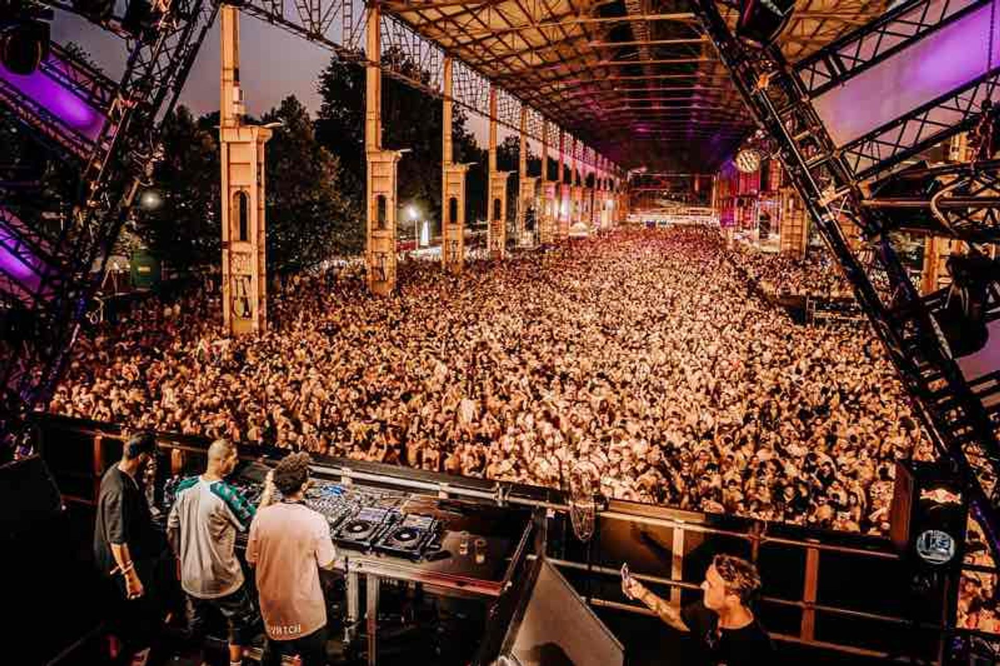
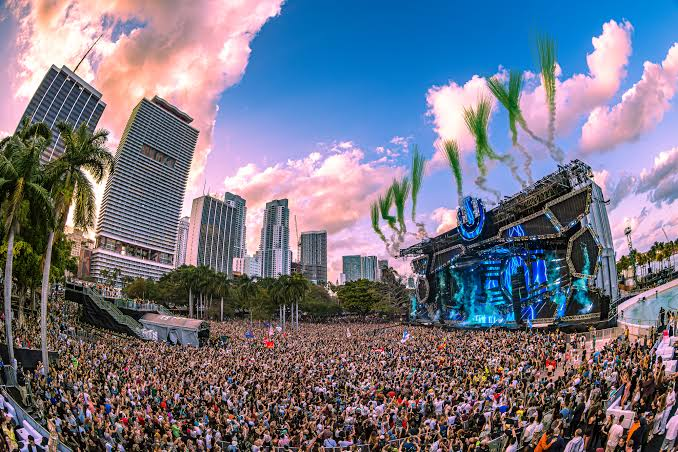
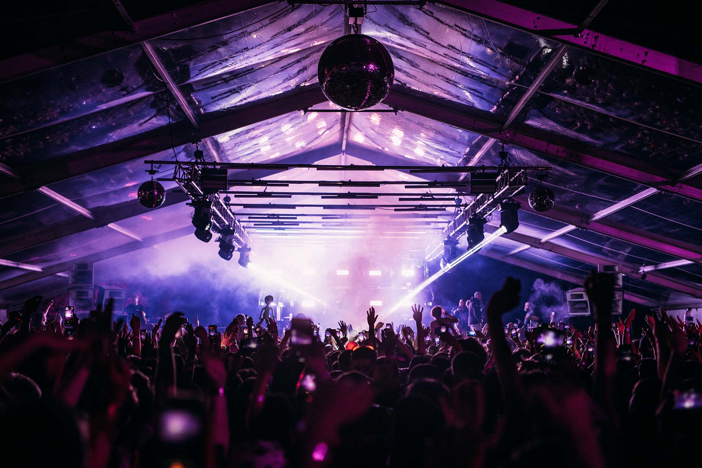
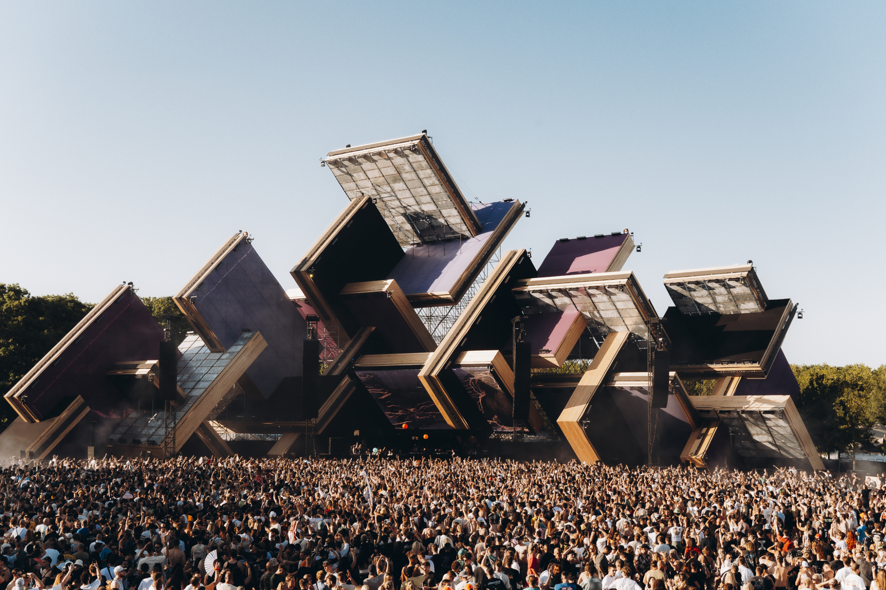

Festival
Futur Festival
El Futur Festival (originario de Turín, Italia) está considerado como uno de los festivales de música electrónica más importantes, vanguardistas e influyentes del mundo.
- Esencia musical: Centrado principalmente en el techno y el house, reuniendo año con año a los DJs y productores más cotizados de la escena global.
- Identidad industrial: Se desarrolla en espacios de arquitectura postindustrial al aire libre (como el Parco Dora en Turín o el Parque Fundidora), fusionando estructuras de acero y concreto con tecnología de punta y artes digitales.
- Experiencia diurna: Nació como un evento 100% diurno durante el verano europeo, apostando por una atmósfera vibrante y comunitaria.

Massive
Ultra Music Festival
El Ultra Music Festival (UMF) es uno de los festivales de música electrónica más emblemáticos, masivos e influyentes del planeta.
- Origen y Sede: Fundado en 1999, se celebra cada año en marzo en Bayfront Park, Downtown Miami, marcando el cierre de la Miami Music Week.
- Esencia musical: Abarca desde el EDM mainstream, big room, trance y electro house en su Mainstage, hasta los sonidos profundos del house y techno en su bloque conceptual RESISTANCE.
- Producción: Mundialmente famoso por sus producciones hipertecnológicas, pantallas gigantes, pirotecnia, láseres y diseños de escenarios futuristas.
- Expansión Global: Bajo Ultra Worldwide, se replica en decenas de países alrededor de los cinco continentes.

Cultural
Exit Festival
El Exit Festival es uno de los festivales de música más grandes, premiados e ideológicamente únicos de Europa.
- Orígenes Revolucionarios: Nació en el año 2000 en Novi Sad, Serbia, como un movimiento de protesta estudiantil por la paz y la democracia.
- La Icónica Sede: Se instala cada verano sobre los laberínticos terrenos del siglo XVIII de la Fortaleza de Petrovaradin, situada a la orilla del río Danubio.
- Diversidad Musical: Gran eclecticismo que abarca desde rock, metal, punk, hip-hop y reggae, hasta la legendaria Dance Arena, templo de la música electrónica al aire libre.
- Gira Global: Se ha expandido internacionalmente con eventos en países como Montenegro, Croacia, Malta y Egipto.

Vanguardia
AVA Festival
El AVA Festival (Audio Visual Arts) es un festival y conferencia internacional de música electrónica y artes visuales celebrado en Belfast, Irlanda del Norte.
- Sede Industrial: Se lleva a cabo en los históricos Titanic Slipways, utilizando un impresionante telón de fondo industrial con contenedores y andamios.
- Enfoque Sonoro: Profundamente enfocado en la cultura de club underground, destacando techno, house, electro, drum & bass y UK garage junto a instalaciones multimedia.
- Creators Forum: Incluye conferencias, talleres y paneles de discusión enfocados en la producción musical y la tecnología.
- Impacto Cultural: Considerado un catalizador cultural clave y referente de la escena electrónica contemporánea en el Reino Unido e Irlanda.

Techno Temple
Awakenings Festival
El Awakenings Festival está considerado como la meca mundial y el festival de música techno más grande y prestigioso del planeta.
- Orígenes y Sede: Nació en los Países Bajos y actualmente se celebra cada año en los terrenos boscosos y lagos de Beekse Bergen en Hilvarenbeek.
- El Templo del Techno: Evento definitivo para los puristas del género, reuniendo a la élite mundial del techno, desde sonido industrial y hard techno hasta vertientes melódicas.
- Producción Monumental: Caracterizado por despliegues visuales imponentes, rayos láser de precisión quirúrgica y sistemas de sonido ultra potentes.
- Alcance: Organiza eventos icónicos durante el Amsterdam Dance Event (ADE) en octubre y ediciones especiales en Europa.